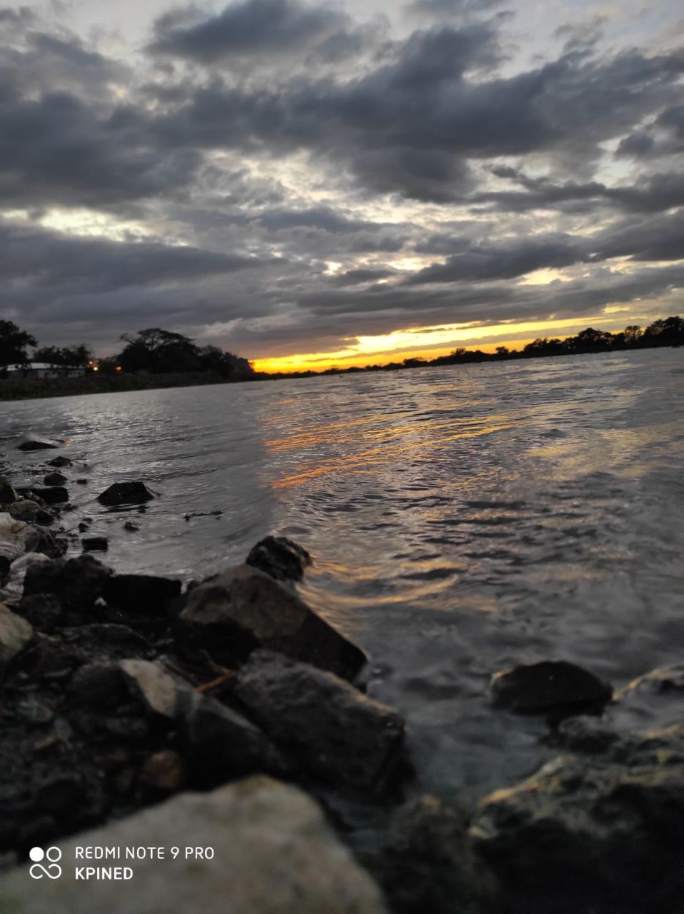
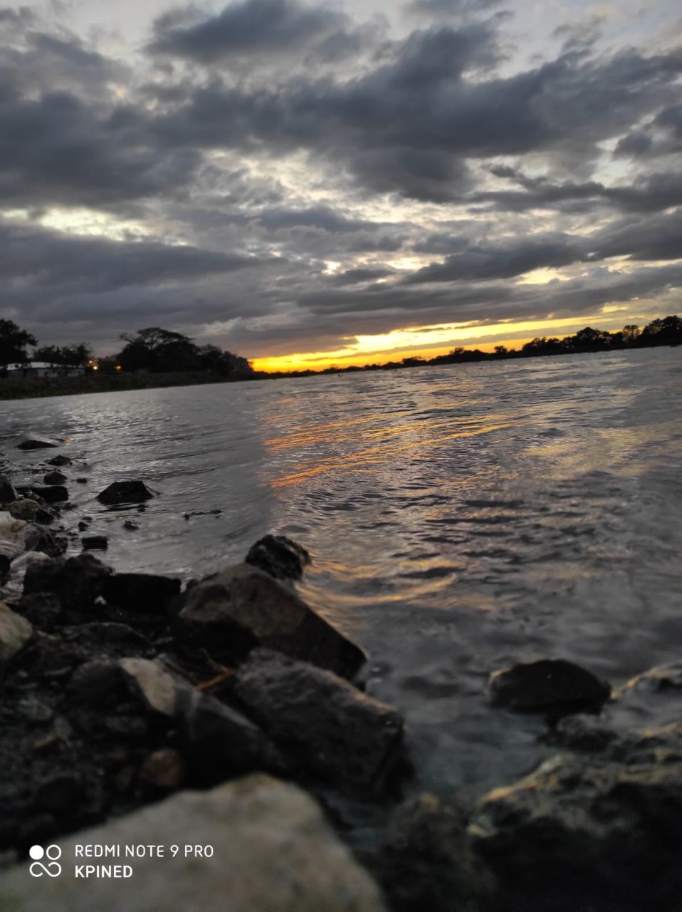

Mi habitat natural
 

"Es muy importante considerar en cuidar nuestro planeta y una forma es cuidando nuestra flora y de fauna"
"Esta web ha sido desarrollada con el proposito de crear espacio en el internet donde se aprecie y se cuide la flora y la fauna"
¿Que se puede hacer?
En primer lugar debemos ser conscientes de la fantástica y maravillosa vida salvaje que nos rodea, para poder transmitirlo a nuestra familia y amigos. Las acciones de concienciación son muy variadas, y para empezar debemos conocer nuestro entorno más próximo, visitando parques naturales, refugios y otros espacios naturales. También podemos incorporarnos como voluntarios en dichos parques o espacios naturales, prestando nuestros servicios según las necesidades específicas de cada espacio, colaborando, por ejemplo, en las tareas de observación del comportamiento de la fauna, como podrían ser las aves..
Esta simbiosis implica que la fauna autóctona provee de alimento y refugio a la naturaleza salvaje. Por ejemplo, insectos como las abejas polinizan las plantas. En los últimos años, la peligrosa difusión de especies no nativas ha creado un gran impacto en las nativas en todo el mundo que, en algunos casos, ha llevado a la extinción de especies autóctonas.Durante nuestras vacaciones, debemos ser especialmente cautelosos con la compra de los llamados “souvenirs exóticos”, puesto que la mayoría afectan a especies en peligro de extinción. Debemos evitar la compra de corales, conchas de tortuga, marfiles, pieles de tigre, de oso polar, de cocodrilo, animales como loros o macacos, productos medicinales cuyo origen son animales como tigres u osos negros asiáticos, entre otros. Debemos ser conscientes que si compramos este tipo de productos, además de contribuir a la extinción de especies protegidas, contribuimos al mercado ilícito de estos productos, así como a prácticas ilegales de caza furtiva.
Porque es importante que aprendamos a cuidar la fauna y la flora?
Importancia de la conservación de la flora
En cualquier ecosistema del planeta Tierra, la presencia de árboles y plantas es imprescindible. Como ya sabemos, esto se debe principalmente a su capacidad para transformar el dióxido de carbono (CO2) en el oxígeno (O2) que los demás seres vivos respiramos. Además, tienen una gran función en la estructura y fertilidad del suelo, ayudando en su compactación, evitando la erosión y nutriéndolo con restos de materia orgánica que se descompone gracias a la actividad bacteriana y fúngica. También se tiene que valorar que muchos árboles y arbustos sirven como refugio y a veces incluso como amagatorio en situaciones de riesgo a muchos animales, sobretodo en los bosques y llanuras con matorrales.
Importancia de la conservación de la fauna
En lo que respecta a la fauna, des de el microorganismo más pequeño, hasta el animal más grande, ya sea un elefante o un rorcual, es realmente importante para la supervivencia humana y para la conservación del medio ambiente. En primer lugar, cada animal, insecto o pájaro, tiene una función en la naturaleza, es decir, una función ecológica para mantener el equilibrio de la cadena trófica que se haya establecido. Estas funciones pueden ser, por ejemplo, contribuir en la regeneración vegetal de los campos, actividad que realizan muchos herbívoros como vacas, cabras y ovejas, sólo con el hecho de pastar y alimentarse de la hierba y otras plantas. Otra función es la que realizan muchos roedores y pájaros, que se alimentan de frutos o semillas que, una vez entran en contacto con el suelo (ya sea mediante defecaciones o por que las entierran) pueden germinar y colonizar nuevos territorios.